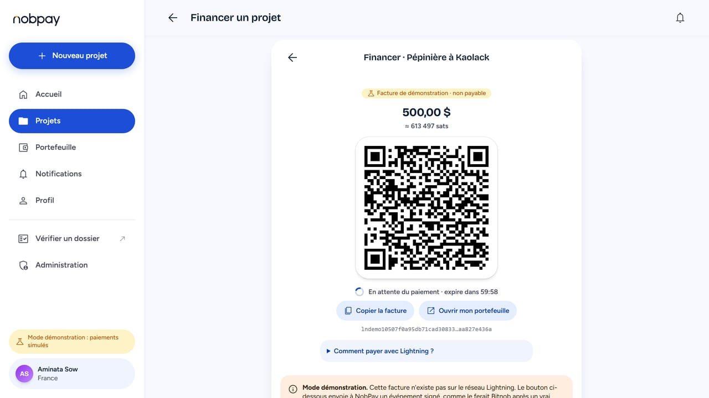
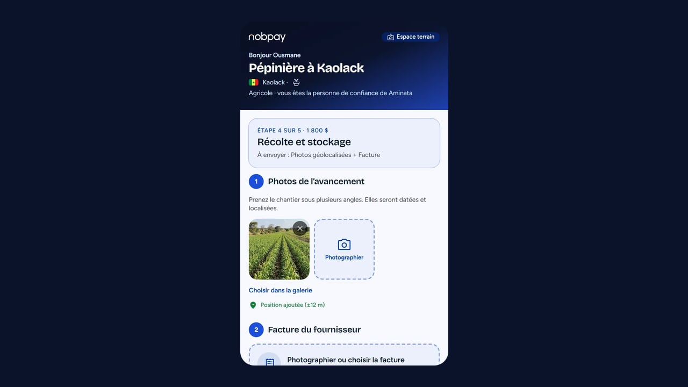
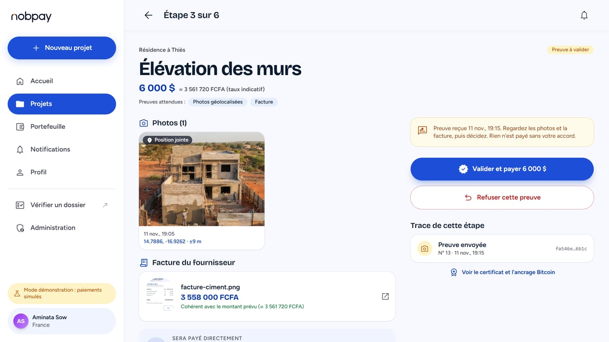
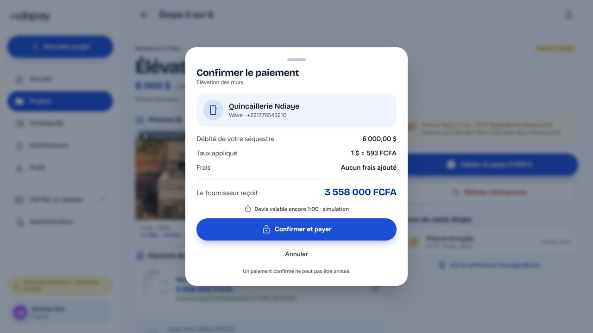
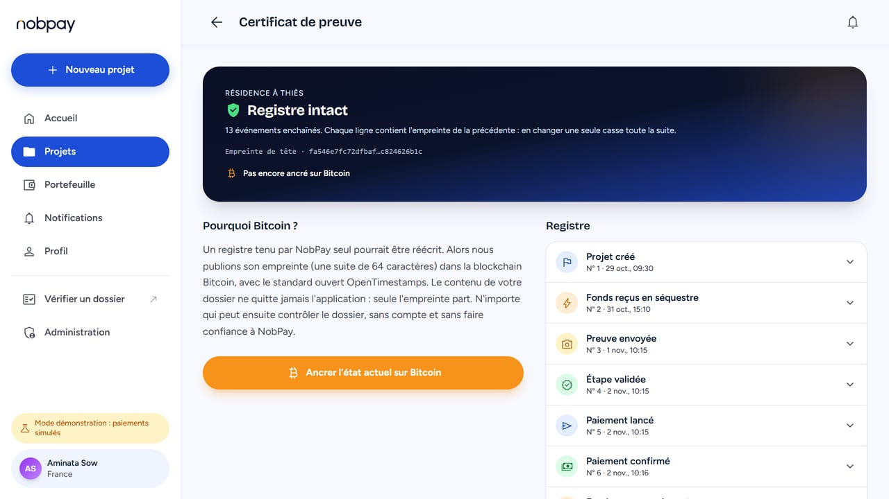
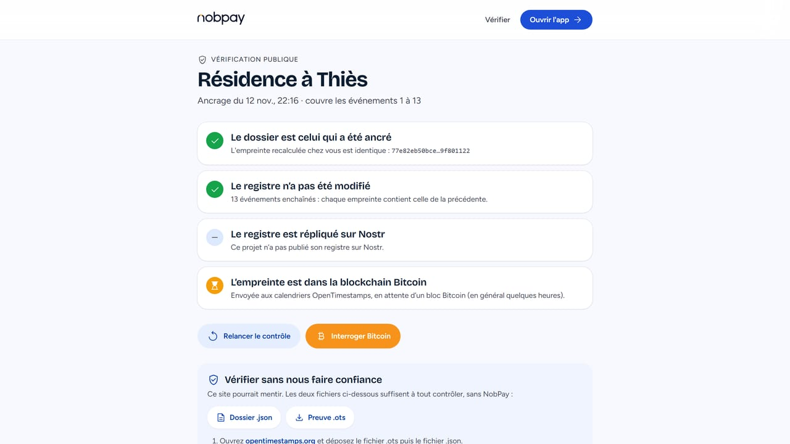

Dakar Bitcoin Hack #4 · updated 12 November 2026 · for judges and organizers
Migrants send over a hundred billion dollars a year to their families in Africa (USD 124.2 billion in 2025, according to IFAD). A lot of it funds a house, a field, a school year or a shop run from afar, on someone's word. A transfer moves the money; it does not control what the money is used for. The family abroad can send everything and hope, or send nothing.
NobPay holds the money in escrow and releases it step by step, only when the work is shown: photos, the supplier's invoice, and who is to be paid. The supplier is then paid directly, over Lightning at their Lightning address or by mobile money. Every decision goes into a hash-chained ledger anchored on Bitcoin, and a public page lets anyone re-check it in their browser, without trusting our server.






Around the project: an independent witness who confirms or disputes each proof (and can be made a condition of payment); a family link so relatives can add to the escrow from any Lightning wallet; Web Push notifications; editing and closing a project. The funder can also ask for an AI second opinion on the proof: the AI reads, plain code compares, the person decides, and it never blocks or triggers a payment.
As of 12 November 2026. We say it plainly: a prototype that states exactly what it does is stronger than one that says more.
| Piece | Status |
|---|---|
| Hash-chained ledger, browser-side verification, OpenTimestamps anchoring | REAL Public calendars, downloadable .ots proof. Automatic anchoring is off on the live demo; the button anchors on request. |
| Funding over Lightning (Nostr Wallet Connect, NIP-47) and supplier payout to a Lightning address | SIMULATORS Tested end to end against a scripted wallet, and the adapter against a real NIP-47 wallet service on a simulated relay. Not yet run with a real wallet and real sats. The live demo simulates payments. |
| Refund of unused escrow | SIMULATORS Implemented and tested against the scripted wallet. |
| Mobile money payout (Wave, Orange Money, Free Money) through Bitnob | SANDBOX Run end to end in the Bitnob sandbox earlier in the project; not part of the live demo. |
| Nostr commitments (kind 8421) and NIP-03 attestations | OFF ON DEMO Tested against fake relays; the verification page was checked against real relays in read-only mode. Publishing to real relays has not been tried yet. |
| AI advice on proofs (Claude) | OFF ON DEMO Tested with a fake client; never run against the real API yet (no API key on the demo). |
| Custody | The escrow is held by the instance's own wallet: a custodial design, bounded by pilot ceilings and a solvency check that pauses payments if what is owed exceeds what the wallets hold. Not a licensed financial service. |
| Demo hosting | A Docker image on a free plan: 512 MB of memory, asleep after 15 minutes without a visit, data reset at each restart. The deployment and backup scripts were run in a clean GitHub Codespace. |
One Node process, a file database and an append-only ledger keep the demo simple to run and to audit. Money paths assume the network lies: every claim a wallet or another server makes is checked before it is believed.
| Criterion | In the project |
|---|---|
| A testable MVP | The live demo (steps above), a 15 USD quick trial, the public verification page, the demo video. |
| Usefulness and social impact | Remittances to Africa reached USD 124.2 billion in 2025 and close to a third of the money sent to low and middle income countries reaches rural areas (IFAD, 14 September 2026). A transfer moves money; it does not control its use. Three corridors on one engine: a project back home, school fees, a merchant's restock. These figures describe the market, not results of NobPay. |
| Security by design | Two wallet connections with different rights (one can only make and look up invoices, one pays and carries a budget); pilot ceilings; solvency check; a payment is believed only with a preimage that hashes to the invoice, and a lost answer keeps funds reserved instead of paying twice; SSRF-safe client for Lightning addresses; cross-site request protection; signed private links; commitments with no name and no amount; secrets never in Git (a scan runs in CI). |
| UX/UI | The person on site needs no account; the funder is told exactly what to look at and sees a quote before paying; French and English interface; designed phone first. |
| Originality | Pay on proof over Lightning, with a ledger anyone can verify without us (the browser asks Bitcoin calendars and Nostr relays itself); an independent witness and a family link without accounts. |
| Technicality | Next.js 16, React 19, TypeScript (strict), zod 4; own BOLT11 decoder and LNURL checks; NIP-47, NIP-03, NIP-05; OpenTimestamps; 929 automated tests run on every push by GitHub Actions; Docker and Caddy deployment script. |
| A clear pitch | The 2 min 38 video, and this guide. |